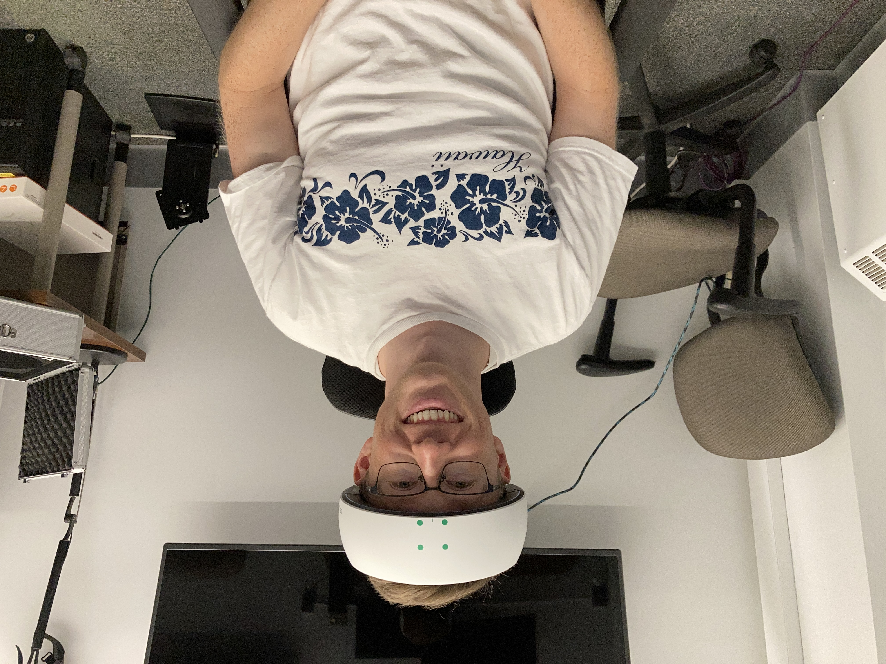
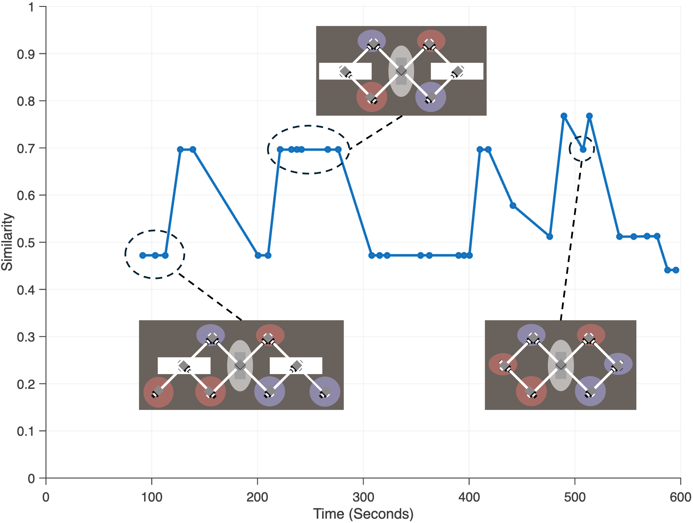
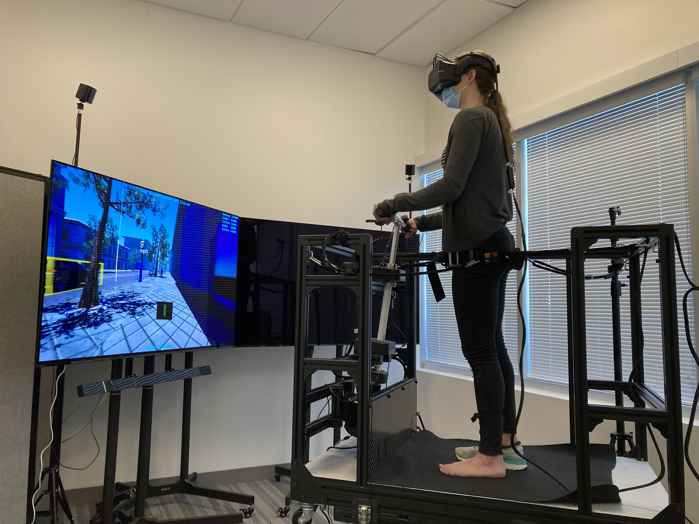
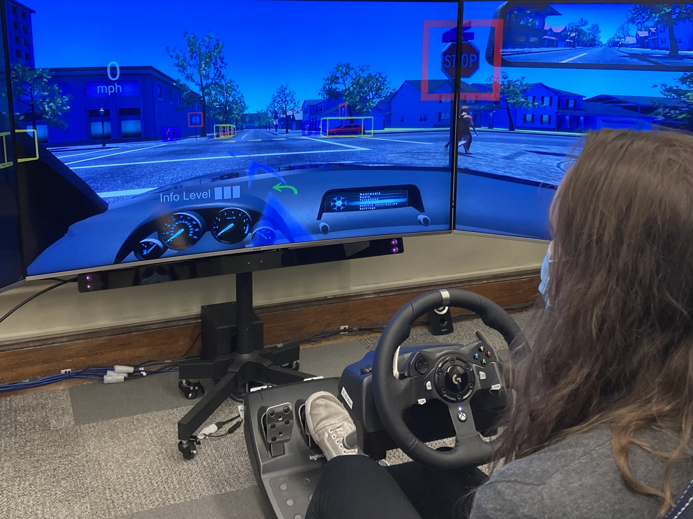
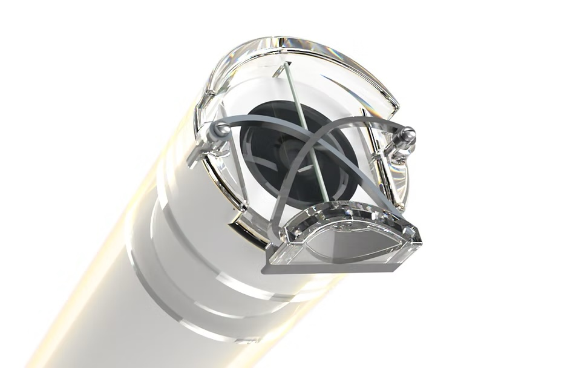
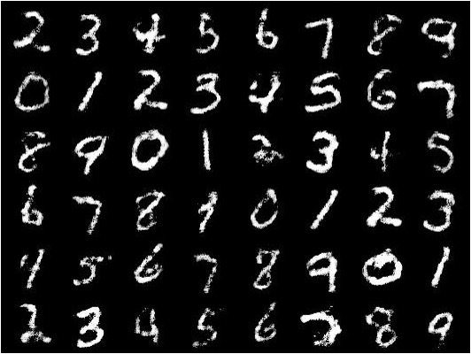
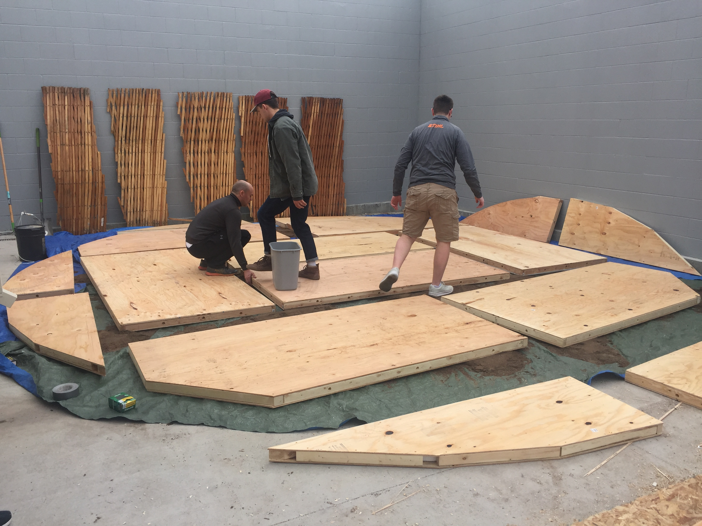
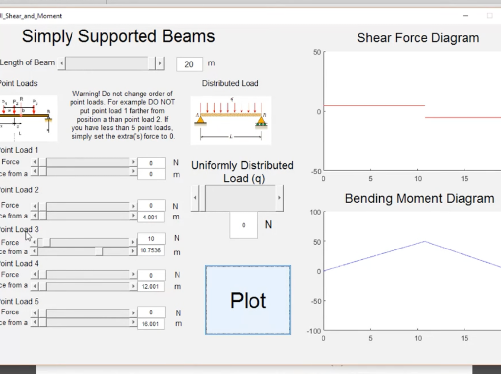
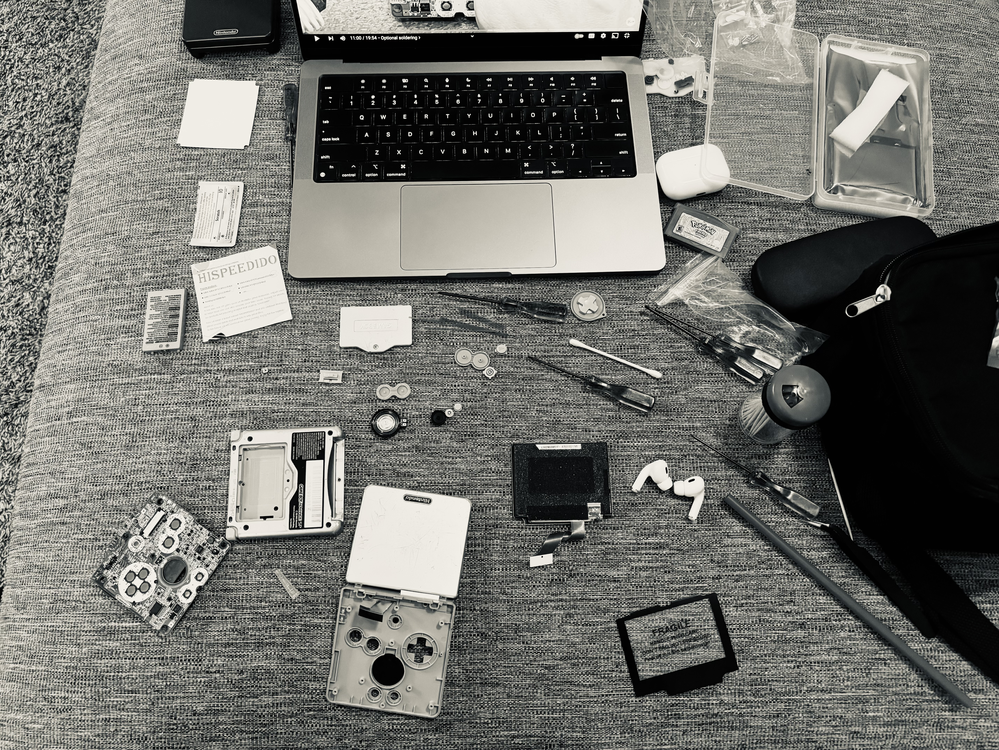

I am a Research Scholar in the REID Lab at Penn State, where I study how humans and AI collaborate in engineering design. My work focuses on understanding design fixation, decision-making, and exploration in complex design problems, with the goal of improving both creativity and performance in real-world settings.
Prior to joining Penn State, I earned a Ph.D. and M.S. in Mechanical Engineering from Purdue University and a B.S. in Mechanical Engineering from BYU.
Research
•
Patents
•
Technical Projects
•
Interests
•
Contact
Research

Correlating Brain Activation with Design Fixation
Measured brain activation of designers using functional near-infrared spectroscopy (fNIRS) while they completed a design task.
Correlating the brain activation with episodes of design fixation revealed the right frontopolar cortex as the strongest differentiator
between fixation and defixation episodes, with more activation during defixation. This work is in progress and will be submitted to Design Science.

Quantifying Design Fixation in Constrained Tasks
Developed a methodology for objectively measuring design fixation using behavioral data,
enabling direct comparison of design strategies in computer-based environments. The paper has been
accepted by the Journal of Mechaical Design and will be available soon.

Dual Mobility Study
Explored how people develop trust when using different automated vehicles, comparing a familiar automated car to a novel automated sidewalk mobility. Using immersive simulator rides and surveys, the results showed that trust grew similarly across both systems.
Findings are published in Frontiers in Psychology and are available here.

The Interaction Gap
Examined how trust in partially automated vehicles changes when people experience gaps between uses, mimicking real-world shared mobility.
Using a driving simulator with repeated sessions, the results showed that trust gained or lost during an initial interaction partially faded after a one-week gap, indicating that periods of non-use can erode both positive and negative trust impressions of automation.
Findings are published in the 66th HFES Annual Meeting Proceedings and are available here.
Patents

Scope Wiper & Irrigation Cleaning System
Contributed to the design and development of an origami-inspired, laparoscope cleaning attachment. The patent was awarded in 2023 and is currently licensed to Bloom Surgical.
Technical Projects

Conditional Generative Adversarial Network for MNIST Data Generation
Created a conditional generative adversarial network (CGAN) in Python using PyTorch to generate synthetic MNIST data for my Machine Learning class. I carried out a simple
experiment on Instagram where I asked people to guess which images were real and which were generated, and I fooled 24% of the respondents! This was a great introduction
to machine learning for me. If you are interested in reading my project paper, you can here.

Custom Insulated Floor for Mongolian Yurts
Designed a modular, insulated flooring system for Mongolian yurts. I directed a multidisciplinary team of six through two stages of the product development process and then transitioned to leading the heat transfer modeling and experimentation work.
The project was for my senior capstone project at BYU and sponsored by Deseret International Charities.

Matlab GUI for Shear and Moment Diagrams
Designed a Matlab GUI to visualize shear and moment diagrams for point and distributed loads on simply-supported beams. This was for an undergrad coding project, so if you want to hear about it from a younger me you can see the video here.
Interests
Onewheel
I enjoy riding my Onewheel and getting out of the car! I have somewhere between 2,000 - 3,000 miles on my board. I like to fix things on my own and learned how to change the tire.

Gameboy Advance SP Screen Replacement
I like to tinker with retro video games and have repaired or upgraded two Gameboy Advance SPs, one Nintendo Entertainment System (NES), and several gameboy cartridges. I bought a non-working Gamecube and am looking forward to fixing that next!
{kind=link}
{kind=link}
{kind=link}
{kind=link}
{kind=link}
{kind=link}
{kind=link}
{kind=link}
{kind=link}
{kind=link}